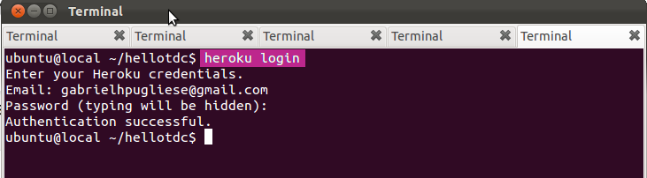
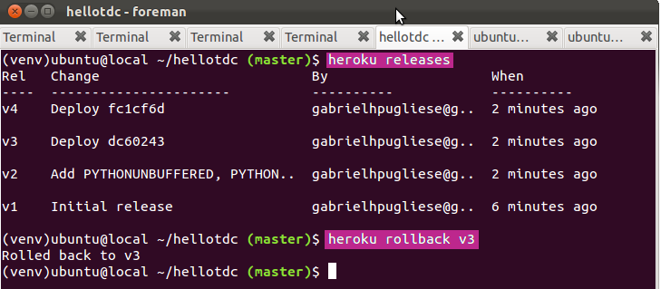

Obtenção de dados do Twitter
Gabriel Pugliese
@gabrielsapo
Paulo Cheadi Haddad Filho
@paulochf
Gabriel Pugliese
@gabrielsapo
Paulo Cheadi Haddad Filho
@paulochf
def hello_tdc():
print 'Hello TDC!'
from flask import Flask
app = Flask(__name__)
@app.route("/")
def hello_tdc():
return "Hello TDC!"
if __name__ == "__main__":
app.run()
16 comandos no shell
bash> wget -qO- https://toolbelt.heroku.com/install.sh | sh
bash> heroku login

bash> sudo apt-get install python-pip # Ubuntu/Debian
bash> sudo pip install virtualenv
Criando virtualenv e instalando o Flask:
bash> virtualenv venv --distribute # Cria o ambiente virtual
bash> source venv/bin/activate # Ativa o ambiente virtual
bash> pip install flask # Instala o Flask
import os
from flask import Flask
app = Flask(__name__)
@app.route('/')
def hello_tdc():
return 'Hello TDC!'
if __name__ == '__main__':
# Bind to PORT if defined, otherwise default to 5000.
port = int(os.environ.get('PORT', 5000))
app.run(host='0.0.0.0', port=port)
# Arquivo de pacotes que a aplicação depende
bash> pip freeze > requirements.txt
# Comando que o server do Heroku executa
bash> echo "web: python app.py" > Procfile
Antes de colocar no Heroku, faça um teste local:
bash> foreman start # Emula o ambiente do Heroku
bash> git init
bash> git add .
bash> git commit -am "First commit."
Criando app no Heroku e subindo os arquivos:
bash> heroku keys:add # Cria e envia sua chave ssh para o Heroku
bash> heroku apps:create # Cria uma aplicação no Heroku
bash> git push heroku master # Sincroniza com o git do Heroku
bash> heroku ps # Mostra serviços rodando
bash> heroku run python # Shell interativo Python remoto
bash> heroku run bash # Bash remoto
bash> heroku releases # Mostra versões de deploy já feitas
bash> heroku rollback v45 # Faz rollback para a versão 45
